A multi-year lab modernization effort on MIL's flagship autonomous ground vehicle — redesigning the electrical system, re-sizing drive motors with torque analysis, and prototyping an upgraded servo-steered drivetrain.
The TerraGator is the Machine Intelligence Lab's (MIL) long-running autonomous ground vehicle platform, designed to demonstrate the lab's capability in fully autonomous outdoor navigation, perception, and control. As an undergraduate researcher, I joined the TerraGator modernization effort — a collaborative push to bring the aging platform up to current engineering and electronics standards while preserving the core vehicle architecture.
My contributions focused on three interconnected areas: the electrical infrastructure, the drive motor sizing, and the mechanical redesign of the drivetrain and steering system prototypes.
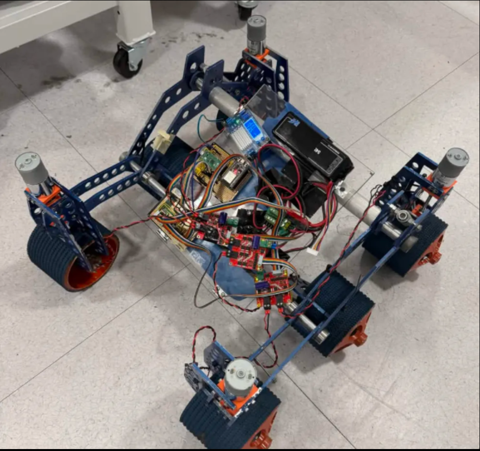
The original electrical enclosure was undersized, poorly organized, and difficult to service in the field. I redesigned and fabricated a new modular electrical box that consolidates all power distribution, fusing, and signal routing into a single, accessible enclosure with standardized mounting interfaces.
To support the drivetrain upgrade, I performed a full motor sizing analysis to validate and select replacement drive motors capable of meeting the vehicle's updated performance targets on varied terrain.
The original drive and steering system required a full mechanical overhaul to support the new motor specifications and improve reliability. I designed and built the first round of prototype hardware for the upgraded system.
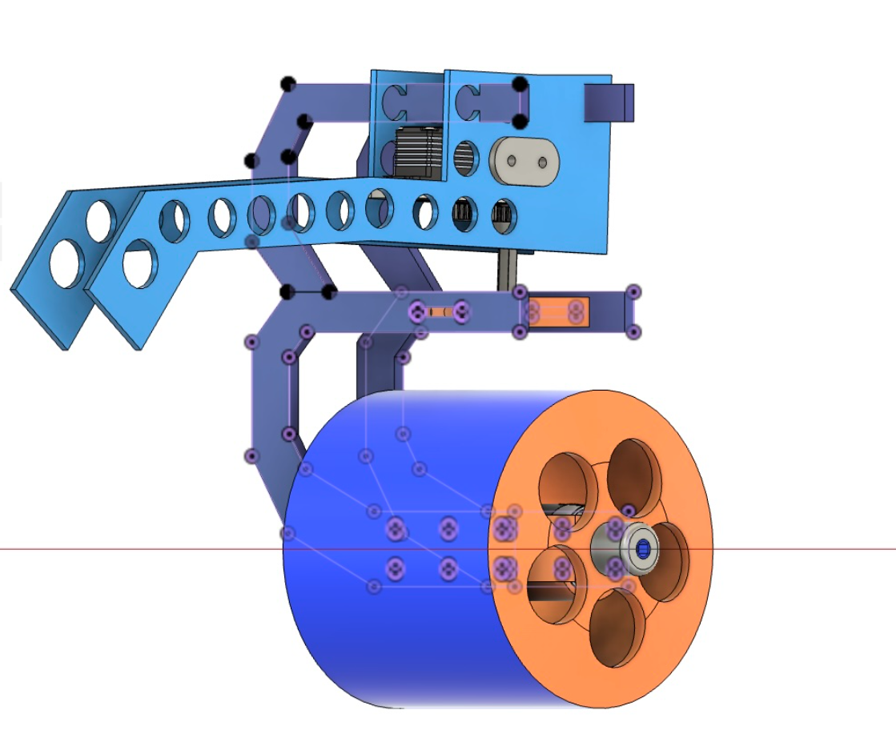
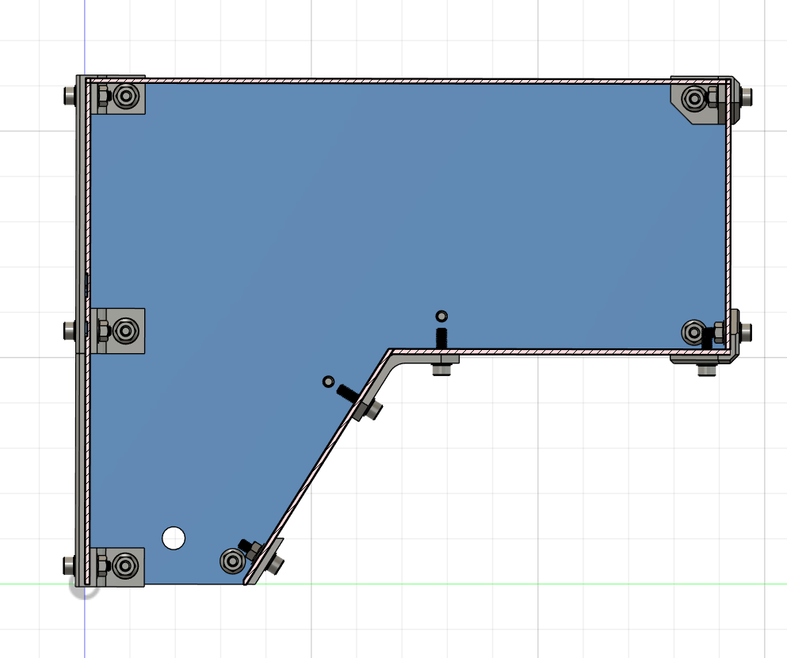
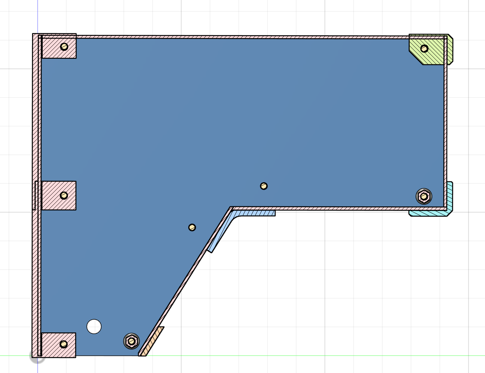
The following CAD progression shows the full design evolution of the new electrical enclosure — from internal layout and hinge detail through to the final closed assembly with extrusion rail mounts.
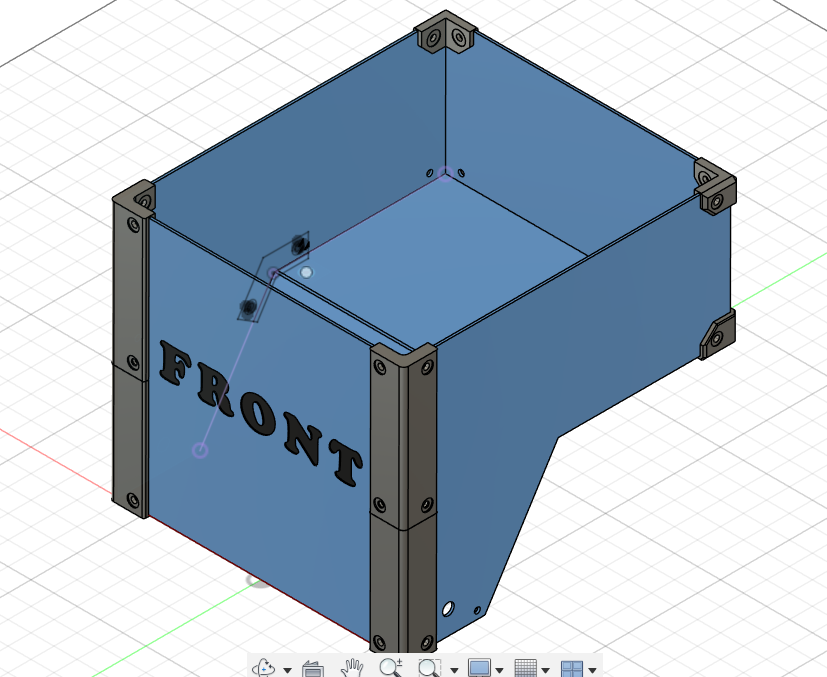
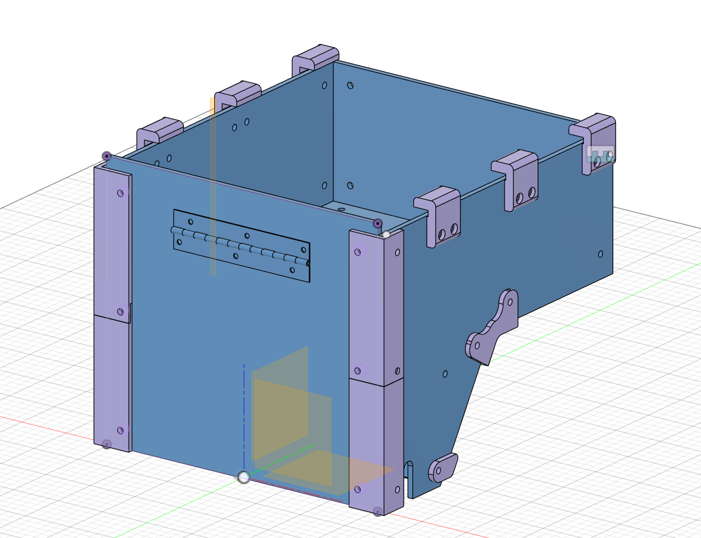
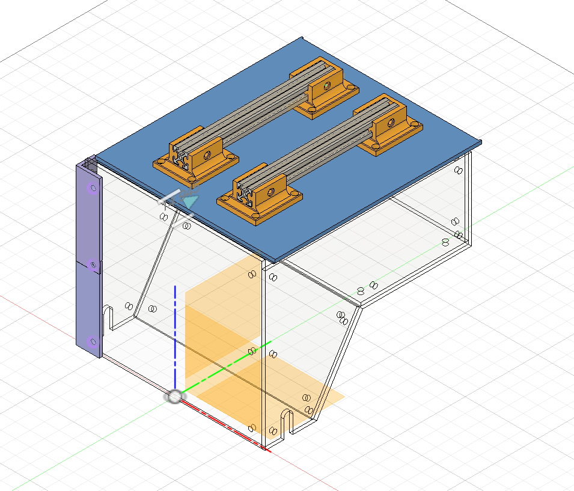
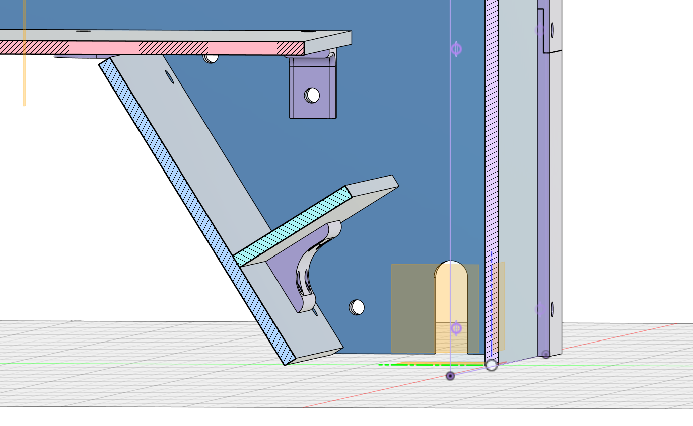
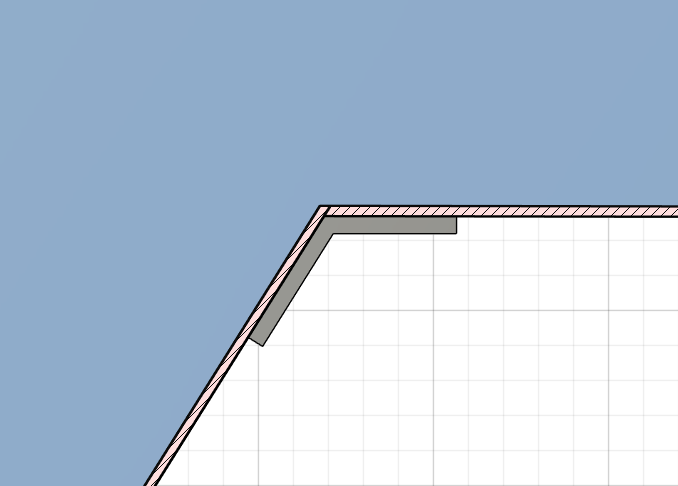
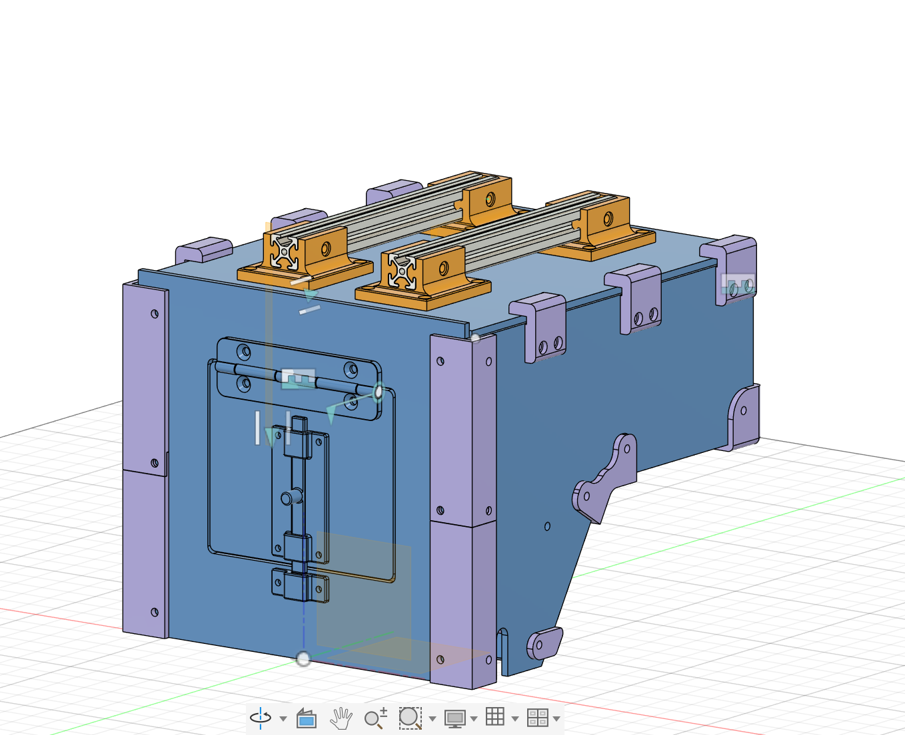
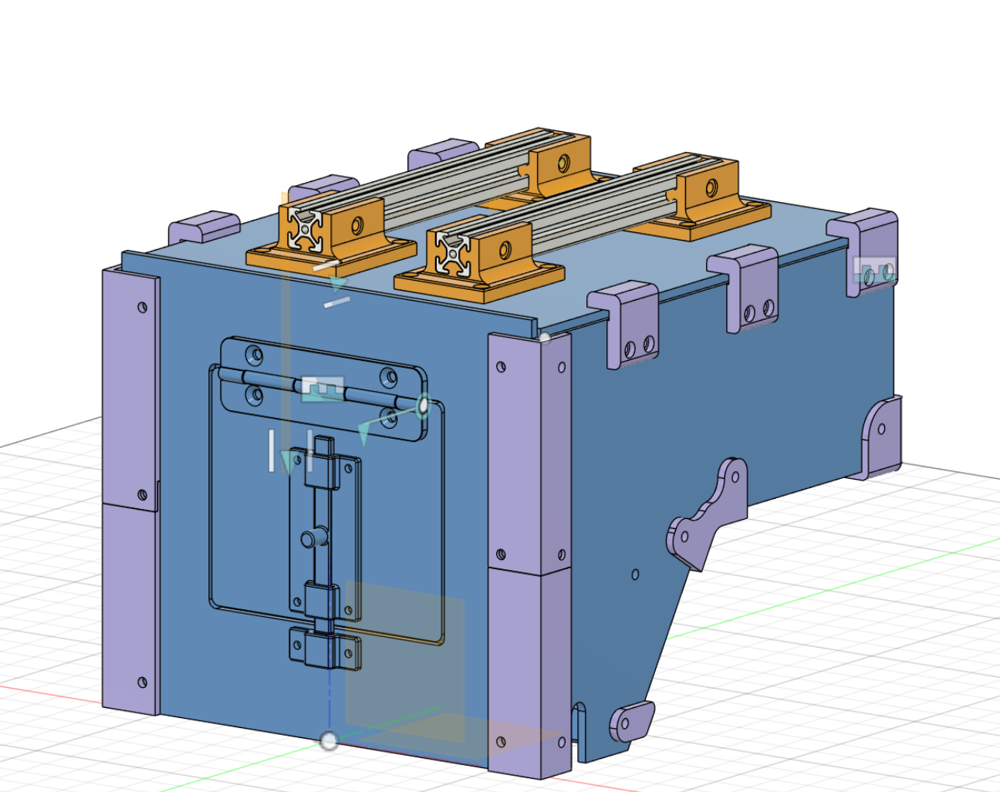
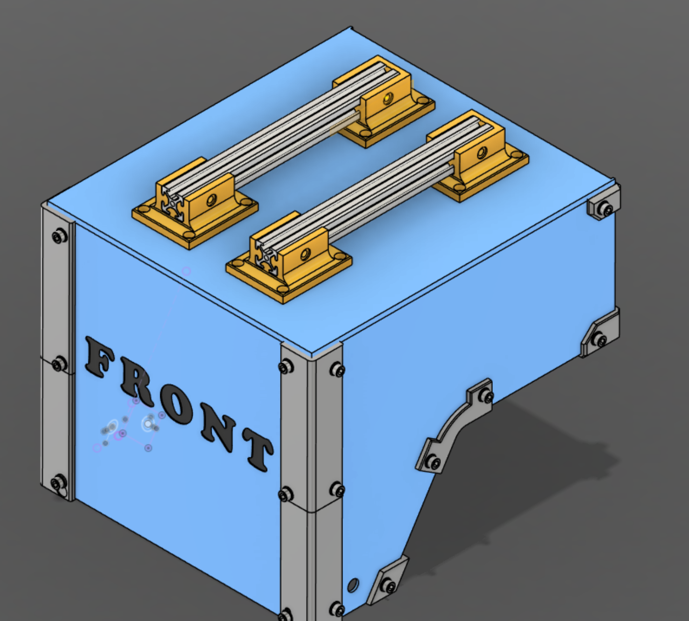
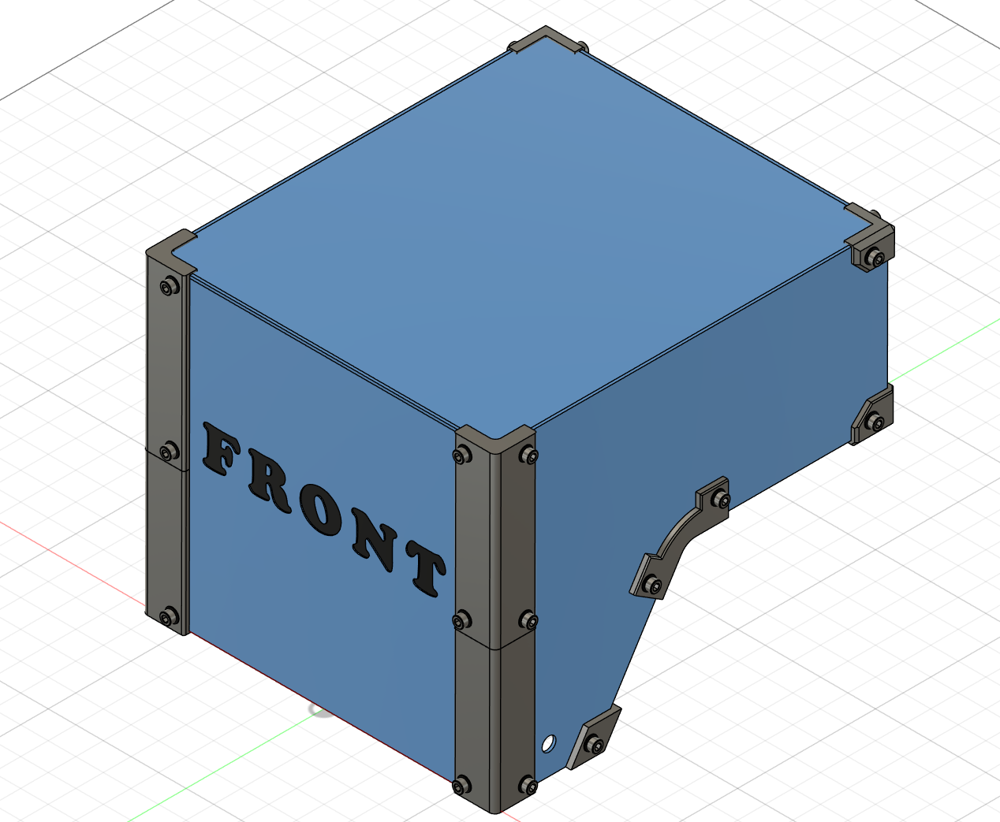
TerraGator is a multi-contributor lab project. My specific ownership areas were the electrical enclosure, motor sizing analysis, and the drive/steering prototype hardware. Other lab members contributed to perception, software, and sensor integration in parallel. Working within a shared engineering environment required disciplined version control of CAD files, clear documentation of design decisions, and coordination on interface dimensions between subsystems.